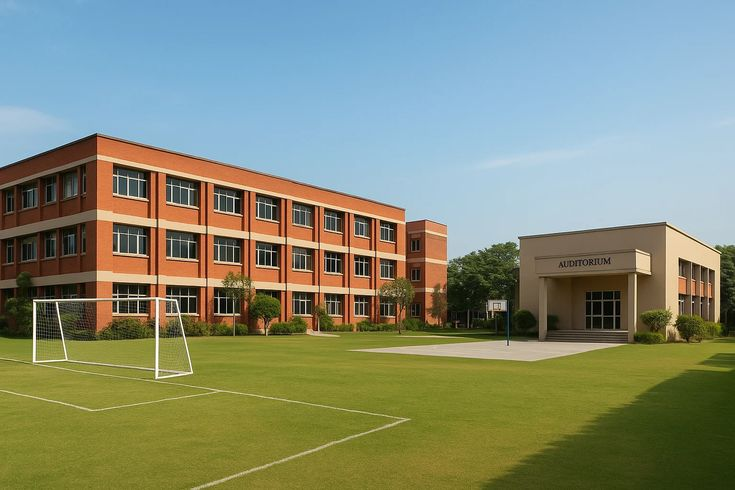

Excellence
We encourage learners to pursue progress, curiosity and their personal best.
WHO WE ARE
Get to know the values and vision behind the Glars learning experience.
OUR STORY

Glars Private Secondary School is committed to creating an environment where learners can develop academically, socially and personally.
Our approach places learners at the centre of the school experience. We value consistent effort, respectful relationships, thoughtful teaching and a culture where each student is encouraged to work towards their best.
Note for the school: Add your official founding story, location, registration details and leadership information here before publishing.
WHAT GUIDES US
These guiding principles can be adapted to match the school's official mission and policies.
We encourage learners to pursue progress, curiosity and their personal best.
We promote honesty, accountability and doing what is right.
We value every person and nurture a safe, inclusive learning culture.
We help students take ownership of their learning and choices.
OUR VISION
Our ambition is to help young people become capable, thoughtful and confident contributors to society.
Through a balanced school experience, we aim to build the academic foundations, practical habits and positive character that support success beyond secondary school.
Explore academics →